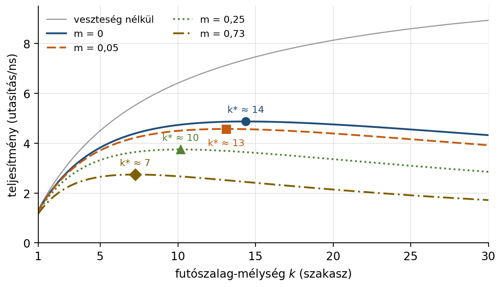

Hét utasításos pipeline-diagramot még kényelmes papíron kitölteni. A
64 elemű sum futása viszont 333 utasítás, a törölt sorokkal
együtt jóval több mint négyszáz diagramsor, a branchy pedig
128 elemen 721 utasítás. Márpedig a tervezői kérdések éppen ilyen hosszú
futásokról szólnak: megéri-e az ID-be hozni az elágazásdöntést? Mennyit
hoz egy jobb becslő? Mi történik, ha húsz szakaszra bontjuk a gépet?
Ezekre olyan program válaszol, amely a könyv eddigi szabályait követve
kiszámítja a diagramot. Ebben az alfejezetben megérted és részben magad
is megírod az archkit.pipeline nyomvezérelt
futószalag-szimulátort (trace-driven simulator), kézi
diagramokkal ellenőrzöd, majd a segítségével megbecsülöd, milyen mély
futószalag éri meg.
A szimulátor nem hajtja végre a programot. Azt, hogy mi történt (mely utasítások futottak, mely elágazás ugrott), a RISC-V-értelmező (Kódolás bitszinten és egy RISC-V-értelmező) már feljegyezte a nyomban (trace). A szimulátor csak azt számolja ki, mikor történt volna mindez a futószalagon. Olyan, mint egy menetrendkészítő: az utasok és a sorrendjük adott, a feladat annyi, hogy minden járat a lehető legkorábban induljon, de ne ütközzön másikkal, és várja meg a csatlakozást.
Ez a szétválasztás sokat egyszerűsít: a szimulátornak nem kell
értéket számolnia, elég a regiszterszámokat, az utasítás fajtáját és az
elágazás kimenetét ismernie. Ugyanaz a nyom pedig bármennyi
hardverkonfigurációval újra lejátszható. Az alábbi ábra négy program
CPI-bontását mutatja négy konfigurációban; ezt az egész ábrát a
szimulátor számolja ki. Figyeld meg, hogy a sum ütemezett
változatán az ID-döntés már valóban nyer, a branchy-n
viszont az operandusra várakozás miatt veszít.
A bemenet Instr rekordok listája (Kódolás bitszinten és egy RISC-V-értelmező); a
szimulátor ebből ezeket használja: a fajtát (kind: alu,
load, store, br, jal, …), a forrásregisztereket (srcs), a
célregisztert (rd), valamint a tényleges következő címet
(next_pc) és az elágazás kimenetét
(taken).
A kulcsötlet: egy sorrendi futószalagon utasításonként öt időpont elég, nevezetesen hogy mikor lép az egyes szakaszokba. Minden időpont az előző utasítás időpontjaiból és néhány hazárdszabályból következik. Jelölje az . utasítás belépési ciklusait, az EX-ben töltött ciklusokat (rendszerint 1), pedig a legutóbbi átirányítás (téves becslés) ciklusát:
Soronként: lekérni akkor lehet, amikor az előző utasítás elhagyta az IF-et (belépett az ID-be), és nem várunk átirányításra; egy szakaszba csak akkor lehet belépni, amikor az előző utasítás már továbblépett; az EX-be pedig csak akkor, amikor az operandusok is elérhetők (). Az a hazárdszabály, minden forrásregiszter legutóbbi írójára:
| Beállítás | A forrás legkorábbi EX-ciklusa |
|---|---|
| forwarding, a termelő ALU-utasítás | |
| forwarding, a termelő betöltés | (ez a load-use) |
| nincs forwarding | (a regiszterfájl az 1. félciklusban ír) |
| ID-ben döntő elágazás | forwardinggal a fenti értékek |
Az átirányítás: ha a becsült következő cím nem a
next_pc, akkor
,
ahol
a büntetés (alapból 2 az EX-ben, 1 az ID-ben döntő gépen). A „nulladik”,
képzeletbeli utasítás időpontjai
,
,
,
;
így az első utasítás az 1. ciklusban indul.
A modul paraméterekkel kapcsolgatja a hazárdszabályokat:
forwarding, branch_stage,
penalty, predictor (bármilyen objektum
predict(pc) és update(pc, taken) metódussal),
mul_latency, unified_memory (egyetlen memória
az utasításoknak és az adatoknak, ami szerkezeti hazárdot okoz), és
mem_delay (többletciklus a memóriában, például
cache-hiba).
Hazárd nélkül minden utasítás egy ciklussal az előző után ér a WB-be: . Minden ennél későbbi ciklus elveszett, és a szimulátor pontosan egy okhoz írja: sorra veszi, melyik feltétel (átirányítás, szerkezeti várakozás, adat, memória) mennyivel tolta hátrébb a WB-t az eddigiekhez képest. Ezért mindig
ahol az utasításszám és az adott ok elveszett ciklusai. A jobb oldali összeg a CPI-bontás (CPI stack): megmutatja, melyik veszteség a legnagyobb, tehát hol érdemes gyorsítani. A feltöltés 4 ciklusa hosszú programnál elhanyagolható.
Egy szimulátor annyit ér, amennyire bizonyítottan a leírt gépet számolja. A modul tesztjei (A labor: archkit, mikrobenchmarkok és mérési fegyelem) két módszert használnak:
Továbbvitt eredmény. Az
archkit.pipeline nyomvezérelt szimulátor egy nyomból
utasításonként öt időpontot számol, és
alakú CPI-bontást ad; a becslő, a büntetés és a memóriakésleltetés
cserélhető horog. Ezt bővíti becslőkkel a Korrelált
és globális előzményű becslők, ezzel vetik össze a sorrenden kívüli
végrehajtást az ILP, függőségek és statikus
ütemezés alfejezettől, és erre épül az 1.
záróprojekt: pipeline-szimulátor elágazásbecslővel.
Korábban, A futószalag elve: átbocsátás és késleltetés alfejezetben láttuk: a szakaszra bontott idejű logika ciklusideje . Ez a szuperfutószalag (superpipelining) ígérete. A másik oldalon a hazárdok ára ciklusban nő: ha az elágazás a futószalag arányosan ugyanolyan mélyén dől el, a büntetés -val arányos. Egyszerű modellként minden utasítás átlagosan ciklust veszít:
az egy utasításra jutó átlagos idő, azaz a vasegyenlet nélkül. Beszorozva . Az -s tag csökken, a lineáris tag nő; a derivált nulla helyén a minimum:
Az optimális mélység tehát nagyobb, ha a logika hosszú, és kisebb, ha
a regiszter drága vagy a hazárdok gyakoriak (nagy
).
Az
értékét a szimulátorból kalibráljuk: a
branchy nyomán
,
a büntetést
-nak
vesszük (ötszakaszos gépen 2), a load-use veszteség szakaszonkénti része
pedig a mérésből
;
így
.
Az ábra a teljesítményt
(,
utasítás/ns) rajzolja
ps és
ps mellett, vagyis Az egyciklusú gép teljesítménye
és korlátai elemkésleltetéseivel, amelyekből A
futószalag elve: átbocsátás és késleltetés a 290 ps-os ötszakaszos
ciklust számolta.

Három dolog látszik. A veszteség nélküli (szürke) görbe örökké nőne: egyedül a hazárdok szabnak optimumot. A tévesztési arány csökkentése a csúcsot magasabbra és mélyebbre tolja. A csúcsok pedig laposak: a legrosszabb esetben () 7 helyett 4 vagy 12 szakasszal is legfeljebb mintegy 9%-kal lassabb a gép.
A modell optimista: nem számol azzal, hogy mélyebb gépen a memória késleltetése több ciklus, a szakaszokat nem lehet tetszőlegesen egyformára vágni, és a magasabb órajel energiát fogyaszt. Az energiahatékony mélység ezért kisebb a leggyorsabbnál.
Továbbvitt eredmény. Az optimális mélység modellje: , minimuma ; a hazárdok súlya (főleg a tévesztés) szabja meg. Erre hivatkozik a nagy magok korlátainál az Egy modern mag anatómiája, az órajel és az energia kapcsolatánál a DVFS, a Dennard-skálázás vége és a sötét szilícium.
A 2000-es évek elején a gyártók a mély futószalagot az órajel növelésére használták: az Intel Pentium 4 (NetBurst) magjai az elődöknél jóval mélyebbek voltak, nagyjából 20, a későbbi változat 30 körüli szakasszal (ellenőrizendő: Intel NetBurst futószalag-mélység; vö. [S-HP]). A tervezett frekvencia elérését végül a fogyasztás és a hő korlátozta, a következő Core-család pedig rövidebb futószalagot és ciklusonként több munkát választott. A vasegyenlet szerint a csökkentése csak akkor hasznos, ha a CPI nem romlik gyorsabban.
A nyom: lw t0, 0(a0); add t1, t0, t2;
beq zero, zero, L (mindig ugrik);
xor t4, t4, t4 (átugorja); L: sub t3, t1, t0.
A végrehajtott nyom négy utasítás, a xor nincs benne.
Forwarding van, a döntés az EX-ben, „nem ugrik” becslés,
.
A rekurzió soronként:
| Utasítás | IF | ID | EX | MEM | WB | elveszett | ||
|---|---|---|---|---|---|---|---|---|
| 0 | (képzeletbeli) | – | 1 | – | 2 | 3 | 4 | – |
| 1 | lw |
1 | 2 | – | 3 | 4 | 5 | 0 |
| 2 | add |
2 | 3 | 5 | 6 | 7 | 1 (load-use) | |
| 3 | beq |
3 | 5 | – | 6 | 7 | 8 | 0 |
| 4 | sub |
7 | 8 | 9 | 10 | 11 | 2 (elágazás) |
Nézzük a kritikus sorokat. Az add EX-e:
;
egy ciklust az adat miatt veszít. A beq ID-je 5, mert az
add EX-be lépéséig (5) ott kell maradnia: a diagramon egy
s cella. A beq ugrik, a becslés téved,
,
ezért a sub IF-je a 7. ciklus. A WB-k eltérése a
sub-nál
.
Összesen
.
Először a rekurzió önálló, rövid megvalósítása (forwarding, EX-döntés, „nem ugrik” becslés):
import sys; sys.path.insert(0, "code")
from archkit import pipeline, riscv
def mini_sim(nyom, b=2):
prev_id, prev_ex, prev_mem, prev_wb = 1, 2, 3, 4 # a képzeletbeli 0. utasítás
R, kesz, sorok = 0, {}, [] # kesz[reg]: legkorábbi EX-ciklus
for ins in nyom:
IF = max(prev_id, R)
ID = max(IF + 1, prev_ex)
r_i = max((kesz.get(r, 0) for r in ins.srcs), default=0)
EX = max(ID + 1, prev_mem, prev_ex + 1, r_i)
MEM = max(EX + 1, prev_wb)
WB = MEM + 1
if ins.rd:
kesz[ins.rd] = WB if ins.kind == "load" else MEM
R = EX - 1 + b if ins.next_pc != ins.pc + 4 else 0 # tévesztés / ugrás
sorok.append((IF, ID, EX, MEM, WB))
prev_id, prev_ex, prev_mem, prev_wb = ID, EX, MEM, WB
return sorok
pelda = riscv.run("""
lw t0, 0(a0)
add t1, t0, t2
beq zero, zero, L
xor t4, t4, t4
L: sub t3, t1, t0
""", regs={"a0": 0x10000})
for ins, s in zip(pelda.trace, mini_sim(pelda.trace)):
print(f"{ins.text:<20}", *(f"{t:>3}" for t in s))
BD = riscv.branchy_data(128, seed=1)
programok = {"sum": riscv.sum_src(list(range(1, 65))),
"branchy": riscv.branchy_src(BD),
"branchless": riscv.branchy_src(BD, branchless=True)}
nyomok = {nev: riscv.run(src).trace for nev, src in programok.items()}
for nev, nyom in nyomok.items():
sajat, hivatalos = mini_sim(nyom)[-1][-1], pipeline.simulate(nyom).cycles
print(f"{nev:<11} saját: {sajat:>5} archkit: {hivatalos:>5}")lw t0, 0(a0) 1 2 3 4 5
add t1, t0, t2 2 3 5 6 7
beq zero, zero, L 3 5 6 7 8
sub t3, t1, t0 7 8 9 10 11
sum saját: 531 archkit: 531
branchy saját: 1233 archkit: 1233
branchless saját: 1428 archkit: 1428A húsz sornál rövidebb függvény ugyanazt a ciklusszámot adja, mint a
modul; a modul ehhez a nyilakat, a törölt sorokat, a CPI-bontást és a
további paramétereket teszi hozzá. A következő blokk a CPI-bontást írja
ki (az alap 1 és a feltöltés
nélkül), kétféle becslővel. A predictor horogra kötött
Tokeletes objektum a nyomból „kilesi” az elágazás
kimenetét, és mindig helyesen jósol. Ilyen hardver nem létezik, de felső
korlátot ad a becslés nyereségére.
class Tokeletes:
def __init__(self, nyom):
self.jovo = [i.taken for i in nyom if i.kind == "br"]
self.k = 0
def predict(self, pc):
return self.jovo[self.k]
def update(self, pc, taken):
self.k += 1
for nev, nyom in nyomok.items():
for becslo in ("nem ugrik", "tökéletes"):
horog = Tokeletes(nyom) if becslo == "tökéletes" else None
r = pipeline.simulate(nyom, predictor=horog)
bontas = " ".join(f"{k} {v:.3f}" for k, v in r.cpi_stack().items()
if k not in ("alap", "feltöltés"))
print(f"{nev:<11}{becslo:<10}{r.cycles:>5} CPI {r.cpi:.3f} {bontas}")sum nem ugrik 531 CPI 1.595 load-use 0.192 elágazás 0.378 ugrás 0.012
sum tökéletes 405 CPI 1.216 load-use 0.192 ugrás 0.012
branchy nem ugrik 1233 CPI 1.710 load-use 0.178 elágazás 0.521 ugrás 0.006
branchy tökéletes 857 CPI 1.189 load-use 0.178 ugrás 0.006
branchless nem ugrik 1428 CPI 1.376 load-use 0.123 elágazás 0.245 ugrás 0.004
branchless tökéletes 1174 CPI 1.131 load-use 0.123 ugrás 0.004Tökéletes becsléssel a branchy (857 ciklus) messze
megelőzi az elágazásmentes változatot (1174), mert kevesebb utasítást
hajt végre. „Nem ugrik” becsléssel is az elágazásos kód a gyorsabb (1233
és 1428 ciklus,
);
a mérleg csak nagyobb büntetésnél fordul meg (3. feladat).
Végül a mélységmodell, a branchy nyomából
kalibrálva:
r = pipeline.simulate(nyomok["branchy"])
f_br, a_lu = r.branches / r.n, r.stalls["load-use"] / r.n / 5
print(f"f_br = {f_br:.3f}, load-use szakaszonként = {a_lu:.4f}")
for m in (0.0, 0.05, 0.25, r.mispredicts / r.branches):
a = f_br * m * 0.4 + a_lu
k = pipeline.optimal_depth(660, 90, a)
t5, topt = pipeline.depth_model(5, 660, 90, a)[2], pipeline.depth_model(k, 660, 90, a)[2]
print(f"m = {m:.3f}: CPI(5) = {1 + 5 * a:.3f} k* = {k:4.1f} "
f"T(5) = {t5:.0f} ps T(k*) = {topt:.0f} ps nyereség {t5 / topt:.2f}×")f_br = 0.355, load-use szakaszonként = 0.0355
m = 0.000: CPI(5) = 1.178 k* = 14.4 T(5) = 261 ps T(k*) = 205 ps nyereség 1.27×
m = 0.050: CPI(5) = 1.213 k* = 13.1 T(5) = 269 ps T(k*) = 219 ps nyereség 1.23×
m = 0.250: CPI(5) = 1.355 k* = 10.2 T(5) = 301 ps T(k*) = 267 ps nyereség 1.13×
m = 0.734: CPI(5) = 1.699 k* = 7.2 T(5) = 377 ps T(k*) = 365 ps nyereség 1.03×Az utolsó sor ellenőrzés is: a modell 5 szakaszra 1,699-es CPI-t ad mellett, a szimulátor 1,710-et (a különbség a feltöltés és az ugrások).
A szimulátorlapon a Program, Becslő, Büntetés (ciklus) mezők, a forwarding jelölő és a Döntés gomb állítható; a felső diagram a CPI-bontást az „alap” beállításhoz méri, az alsó a diagram egy részletét mutatja (keskeny cellákban F, D, E, M, W a szakaszok kezdőbetűje).
predictor horog, és mikor hívja a
szimulátor a frissítést?add t0, a0, a1; lw t1, 0(t0);
add t2, t1, t0. Hány ciklus?branchy 1233, az elágazásmentes 1428 ciklus; 3-nál 1423 és
1557. Írd fel mindkettő ciklusszámát a büntetés lineáris függvényeként,
és add meg, mekkora büntetéstől gyorsabb az elágazásmentes kód!mini_sim függvényt a
forwarding nélküli esettel, és ellenőrizd a három nyomon az
archkit ellen.sum és
a branchy nyomát:
,
büntetés
,
ps. Melyik mélység a leggyorsabb, és miért optimista ez a modell?A nyomvezérelt szimulátor nem hajt végre semmit: a nyom fajtáiból, regiszterszámaiból és elágazás-kimeneteiből utasításonként öt belépési időpontot számol rekurzióval, a hazárdszabályokat (forwarding, load-use, döntés helye, becslő, késleltetések) paraméterként. Az elveszett ciklusok egy-egy okhoz tartoznak, ezért , amiből a CPI-bontás adódik; a helyességet kézi diagramok és invariánstesztek igazolják. Mélyebb futószalagnál csökken, a CPI szerint nő; az utasításonkénti idő minimuma . A jobb becslés mélyebb optimumot enged, a csúcs lapos, és az energiát a modell nem veszi figyelembe.
predict(pc) a lekéréskor ad irányt, az
update(pc, taken) a tényleges kimenetet kapja; a szimulátor
programsorrendben, azonnal frissít.lw): IF 2,
ID 3,
,
EX 4, MEM 5, WB 6. 3.: IF 3, ID 4,
,
EX 6, MEM 7, WB 8.
.def mini_sim2(nyom, forwarding=True, b=2):
p_id, p_ex, p_mem, p_wb = 1, 2, 3, 4
R, kesz = 0, {}
for ins in nyom:
ID = max(max(p_id, R) + 1, p_ex)
r_i = max((kesz.get(r, 0) for r in ins.srcs), default=0)
EX = max(ID + 1, p_mem, p_ex + 1, r_i)
MEM = max(EX + 1, p_wb)
if ins.rd:
kesz[ins.rd] = ((MEM + 1) if ins.kind == "load" else MEM) if forwarding else MEM + 2
R = EX - 1 + b if ins.next_pc != ins.pc + 4 else 0
p_id, p_ex, p_mem, p_wb = ID, EX, MEM, MEM + 1
return p_wb
for nev, nyom in nyomok.items():
sajat = mini_sim2(nyom, forwarding=False)
print(f"{nev:<11} {sajat:>5} {pipeline.simulate(nyom, forwarding=False).cycles:>5}")sum 725 725
branchy 1619 1619
branchless 2582 2582for nev in ("sum", "branchy"):
idok = {}
for k in range(5, 41):
r = pipeline.simulate(nyomok[nev], penalty=round(0.4 * k), wrong_path=False)
idok[k] = r.cycles * (660 / k + 90) / r.n
legjobb = min(idok, key=idok.get)
print(f"{nev:<8} legjobb k = {legjobb}: {idok[legjobb]:.0f} ps/utasítás "
f"(k = 5: {idok[5]:.0f}, k = 40: {idok[40]:.0f})")sum legjobb k = 11: 298 ps/utasítás (k = 5: 354, k = 40: 461)
branchy legjobb k = 11: 336 ps/utasítás (k = 5: 380, k = 40: 575)A szimulátor a mélyítéskor csak az elágazás és az ugrás büntetését
növelte; a load-use veszteség egy ciklus maradt, pedig a mélyebb gépen
az adatmemória is több szakaszra oszlik, és a forwarding útja hosszabb.
Ezért az eredmény optimista: a fenti modell ugyanerre a
branchy nyomra, a mélységgel arányosan növő load-use
veszteséggel, csak 7 szakasz körüli optimumot ad.